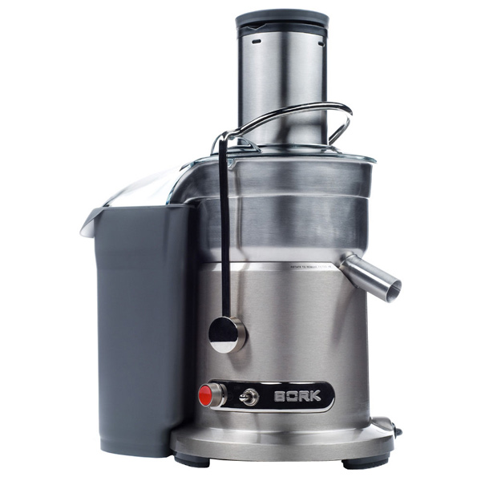
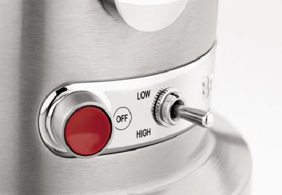

Соковыжималь BORK S800

Технические характеристики
- Мощность: 1500 Вт/1200Вт
- Количество скоростей: 2
- Количество оборотов:1-я скорость - 6500 об/мин; 2-я скорость -13000 об/мин;
- Объём кувшина для сока: 1.0 л
- Объём контейнера для жмыха: 3.5 л
- Вес прибора: 6.62 кг
- Габариты прибора: 320x220x420 мм
- Срок гарантии: 1 год
- Литой металлический корпус
- Премиальный дизайн
Особенности
- Стальные ножи с покрытием нитрида титана
- Автоматическое отключение при перегреве
- Блокировка при перегрузках
- Съёмный кувшин для сока с сепаратором пены
- Съёмный контейнер для мякоти
- Плавный запуск двигателя
- Принудительное воздушное охлаждение двигателя
Дополнительная информация
- Автоматический выброс мякоти
- Идеально сбалансированный двигатель
- Колоссальная центробежная сила, создаваемая сверхмощным двигателем прибора, обеспечивает вращение фильтра со скоростью 6500-13000 об\мин оборотов в минуту

- Патентованный широкий загрузочный желоб для продуктов диаметром 84 с центрирующим металлическим ножом
- Система включения устройства не позволит соковыжималке работать, если она неправильно собрана, что гарантирует безопасность и заявленные эксплуатационные характеристики
- Щетка для очистки в комплекте
- Все съёмные детали, после использования, пригодны для очистки в посудомоечной машине